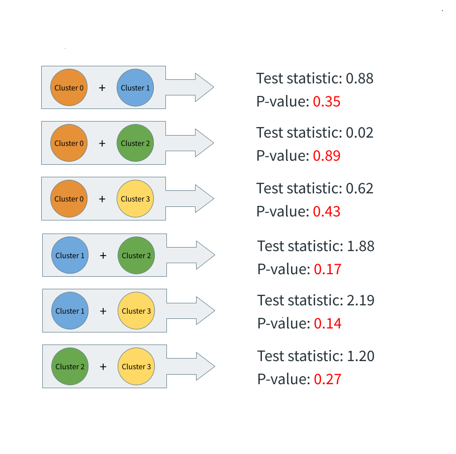

Log rank tests are performed on each unique combination of cluster pairs, they yield p-values to determine if two Kaplan Meier curves are significantly different from each other. As a result for the log rank tests, all p-values are greater than 0.05. None of the clusters have significantly different survival outcomes to another.

P-value (0.24) is greater than the significance level (0.01)
Fail to reject the null hypothesis
Interpretation: our miRNA clusters do not correlate with molecular subtypes